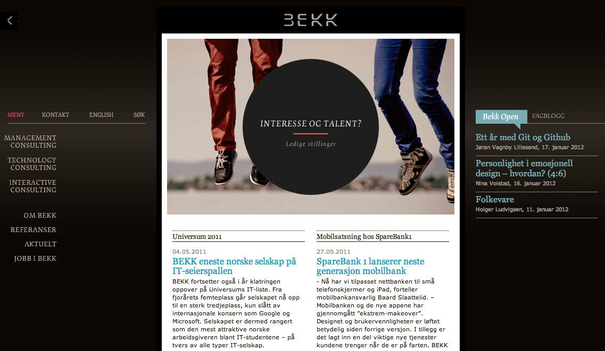
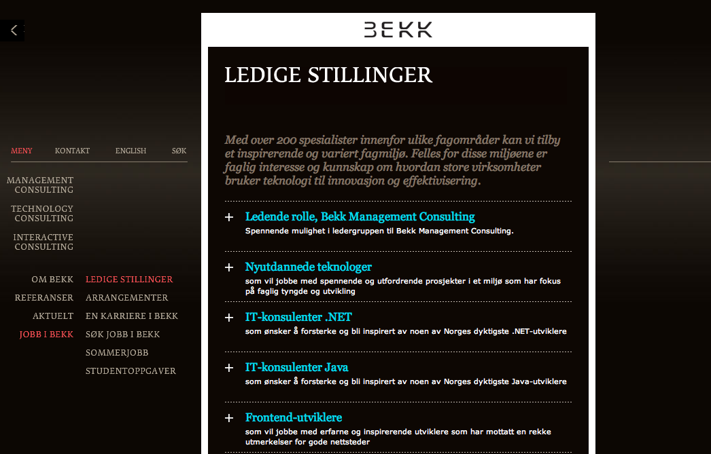
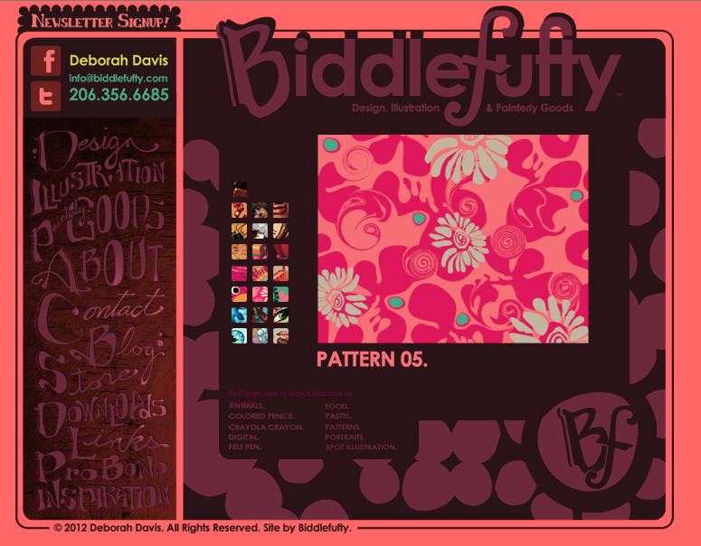
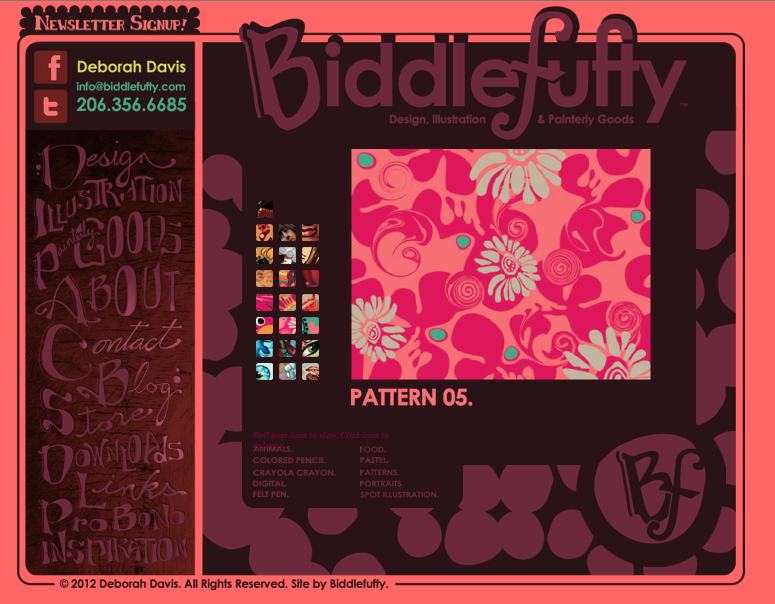
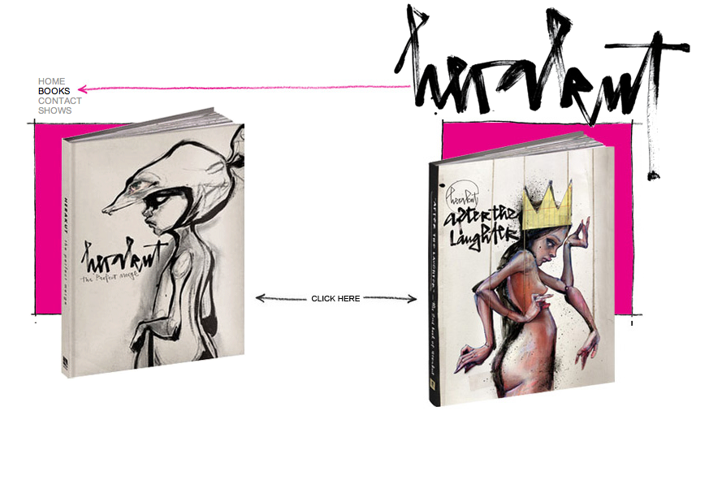
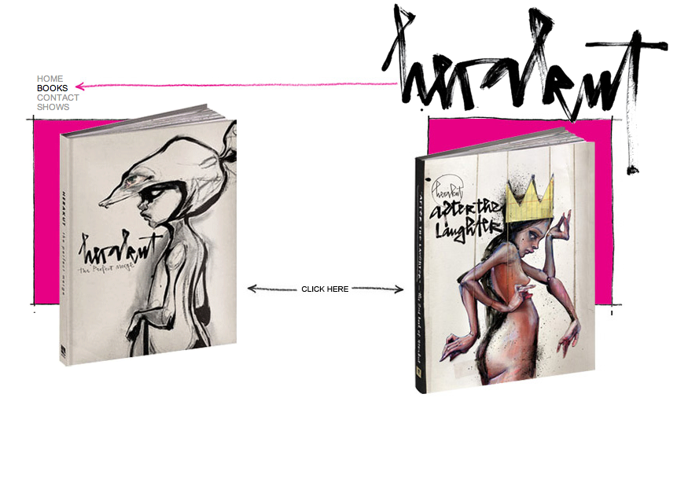
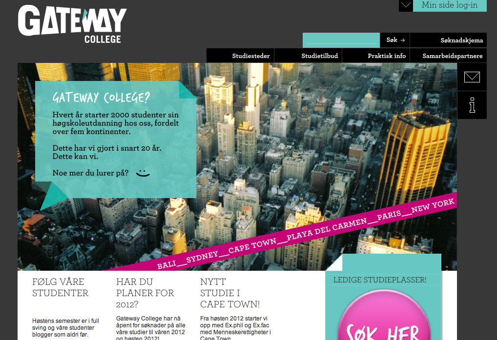
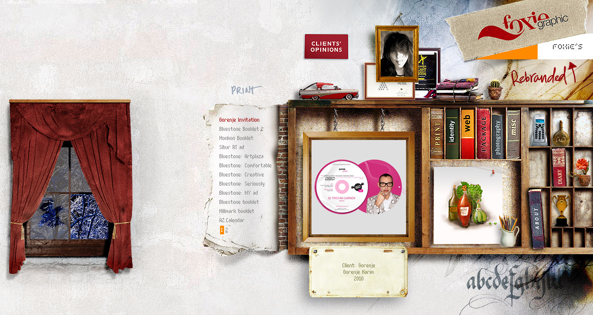
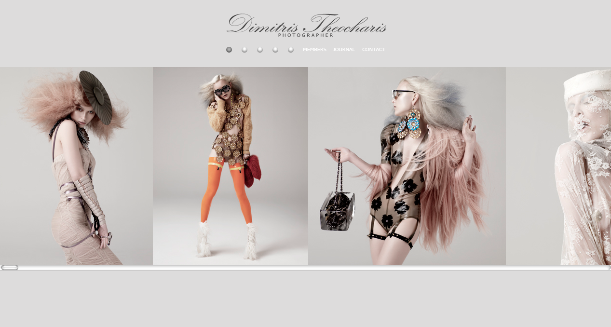
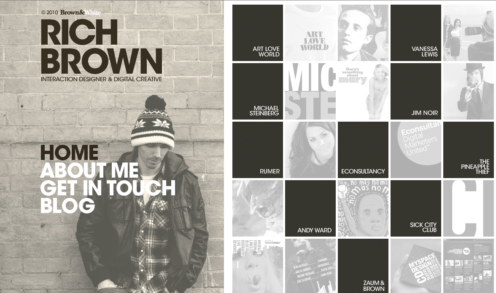

Competitive Analysis : Portfolios
Fixed sidebar
 | Site | Url | Date | Bekk | www.bekk.no | 01.18.2012 |
|---|---|---|
| Brand | All the black on this site makes me think of men in suits. The brand is serious and sophisticated. It is straight forward. It's business. | |
| Functionality | The search functionality is included in the menu, and are available at all times. It is easy to get back to the main page from wherever you are located by clicking the logo or the little arrow in the top left corner. When you click on the blog a new tag is opened so you don't have to worry about getting back to the main page. I also like the way the blog matches the rest of the sites. The fixed sidebar makes the navigation very efficient. I also think the main menu choices includes the most important tasks. It makes it clear what is the business of the brand. It is easy to find the address. It even includes a map. | |
| Interactivity | The main interactivity is through links and menu choices. These choices are highlighted and some of them also have additional choices that are displayed when you hover over them with the mouse. It is also possible to choose to see a limited English version of the site | |
| Navigation | What I like about the navigation on this page is how you can play around with different menu choices from any location. It is easy to keep track of where you are located. All choices are highlighted in red all the way from the higher-level choice down to the low level. The text field has links that will take you straight down to what you want to read about. | |
 

| Site | Url | Date |
|---|---|---|
| Biddlefufty | www.biddlefufty.com/index.html | 16.01.2012 |
| Brand | When I look at this site, one of the first words to pop into my head is fun and playful. I think the pink, purple and red color palette also makes the brand girlish and romantic. After playing around with the portfolio I will also characterize it as spontaneous, as the spots changes when moving the mouse over them. The name Biddlefufty has a friendly ring to it. | |
| Functionality | The fixed menu makes the navigation functional. The user can choose to go to a different site within the portfolio at any time. The small icons that you can hover over to view, helps make the navigation efficient. This enables the user to see the different designs without clicking back and forth. This functionality also has the descriptive text: roll over icons to view, click to enlarge. The menu choices lights up when hovered over but when it is clicked it goes back to its original color. If the selected link had stayed light up it would be easier for the user to keep track of where he/she is at all times | |
| Interactivity | This portfolio have a lot of mouse-over activity. Menu choices lights up, spots changes and image frames are filled with pictures. This keeps the portfolio interesting and makes me want to explore it further. This is also what makes the site fun and playful. The only thing missing is a search field | |
| Navigation | The fixed menu is the main navigation element of the portfolio. It is however not clear how many sites the portfolio contains when the user is located on the index page. When clicking on design you first get a description and have to click again in order to get to the actual design portfolio. In the left corner there is a new menu, but this does not do anything here. This gives the portfolio an unfinished feel. The navigation is also slightly inconsistent. The download page has a different type of navigation than the other pages. In most pages you navigate by clicking on the small images mentioned under functionality, but in this case you navigate through the images with back and forth buttons. Clicking on the main logo sends the user back to the index site. | |
Headline and gallery
 

| Site | Url | Date |
|---|---|---|
| Herakut | www.herakut.de/home.html | 16.01.2012 |
| Brand | I find this brand clean, serious and focused. By this I mean that there is no fuss or unnecessary distractions. The art is emphasized, not the brand. | |
| Functionality | The menu itself is small in size, but an arrow is pointing towards it and draws attention to it. The selected site is highlighted which makes it easy for the user to keep track of his/her location. Overall the portfolio has very little functionality. Only what needs to be presented are presented. | |
| Interactivity | There is no interactivity except from the navigation links. This makes the portfolio a bit static. The shifting of images are controlled by a timer. It is not possible to go back to take a second look at an image, you just have to wait until that image shows up again. Nor is it possible to click on the image to enlarge them. | |
| Navigation | The navigation is efficient, but there is also very few choices. What you see is what you get. You know where you are and where you are going. | |
| Site | Url | Date |
|---|---|---|
| Kenny Meyers | kennymeyers.com | 01.19.2012 |
| Brand | I find this brand simple and clean. It is creative in the way the circles are used to display the gallery. It is however not clear who Kenny Meyers is or what he does. | |
| Functionality | The gallery on this site is under the folder. The functionality could have been improved by an arrow or something that indicates where it is and that you can scroll down to view more. It is also unclear where the different menu choices will take you. Links in the gallery could have been opened in a new tag to make it easy for the user to get back to the home page. The different pages have different layouts and does not seem to be related to each other. | |
| Interactivity | The menu choices pops up a little bit when you point the mouse at them and the descriptive text are highlighted. | |
| Navigation | It is not obvious how to get back to the main page after a menu choice was selected. For example in the Nerdary you have to click on writers and then Kenny Meyers. There are no good tools used to keep track of where you are located. | |

| Site | Url | Date |
|---|---|---|
| Maisengasse | www.maisengasse.at | 01.19.2012 |
| Brand | This site tells me that the brand is creative due to how the projects are presented. The colors make it look serious and professional. | |
| Functionality | I like the way the projects in the portfolio are presented like clothes on a line and how they swing when you navigate through them. The navigation is efficient. The contact information on the main page is below the folder and as far as I can see, it is impossible to scroll down to see it. Luckily the contact information is also presented on an independent contact page. The color of the banner changes to match the different projects. This simplifies the task of keeping track of where you are. If you prefer to view the project in a list, this is also possible. By adding this opportunity they meet the criteria of more users. | |
| Interactivity | When hovering a project you get its category. This way you know what to expect when you click it. It is possible to contact the company by filling in a form. The location of the company is presented on a map. You can interact with the map by dragging it in different directions, by typing in your destination to get directions and by zooming in or out. | |
| Navigation | I like the way you navigate through the projects by clicking the side arrows. The main menu is always available and the selected choice is traceable by a little arrow underneath it. This arrow is however a bit difficult to spot as it blends into the background. | |
Power Grid

| Site | Url | Date | Cateway college | www.gatewaycollege.no | 01.17.2012 |
|---|---|---|
| Brand | This brand is sporty and young. It is diverse. By this I mean that it appeals to different people with different interests. It is also adventurous. | |
| Functionality | You get what you expect to get when you push a certain button. It is possible to login without leaving the index page. It is efficient. When hovering over a choice, the further selection opportunities are showed instantly. The site-map at the bottom of the site could have been dropped as this information is already clear. The main tasks are clearly visible. I have no problems understanding what this brand's business are. | |
| Interactivity | Mouse-over gives additional menu selections, further information and also images in some cases. The site also has an application form. Some fields are type-in while others are drop-down menus. Further down on the index page there is a widow where you can scroll through news and media. | |
| Navigation | The menu is always visible and the selected choices are highlighted. Icons are used for the regular choices: contact, info, print etc. These choices are also visible and easy to find. When a page is selected from the main menu, additional menus are shown. All menus are consistent within their environment. | |
Full Screen Photo
| Site | Url | Date |
|---|---|---|
| Foxie | foxie.ru | 01.18.2012 |
| Brand | I think this portfolio is creative in the way the main page stands out from most other portfolios. The window with the snow and the bookshelf gives it a homey feeling. It is playful in the way that you have to play around to get around. It is also mysterious and untraditional in the way the menu choices are hidden. | |
| Functionality | The way of getting around is inefficient. It is also slow when it comes to loading images into the frame. It is not obvious what the menu choices are and you have to try and fail in order to find the links in the bookshelf. When you have found a link it is hard to see how it changes the interface. | |
| Interactivity | The car starts when hovering it. There should be a highlight indicating a link when it is hovered by the mouse. | |
| Navigation | There is no home page. At first the list is filled with latest work, but as I start navigating around the sites I have still not found a way to get back to latest work again. It is inconvenient to have to click the menu for the frame to change content and then again click the frame content to be able to view what you selected from the menu. Also, to scroll the list you have to click on the numbers in the bottom. This is time consuming and annoying. | |
| Site | Url | Date |
|---|---|---|
| Caramel Ink | www.caramelink.com/ | 01.19.2012 |
| Brand | This site makes me think of a fairytale. The use of gold color makes it look exclusive. It also has something calming and exotic to it. If the brand had a sex it would have been female. | |
| Functionality | I like the arrow and the descriptive text that tells you that there is more underneath the folder, and the way it elegantly flows up when you push the button. It could have been even more functional if you could use the same method to get back up instead of having to scroll. It is easy to scroll down the portfolio to view the different projects. | |
| Interactivity | It is possible to write a message to the designers by filling out a form. If you are a potential client you can easily contact them by filling out your budget, time frame etc. You can also search for content. | |
| Navigation | The main menu is visible at all times. The selected choice lights up in the main menu, but not in the lower level menu. It is easy to navigate back to the home page by clicking the logo. | |
Featured Photo
| Site | Url | Date |
|---|---|---|
| Dimitris Theocharis | www.dimitristheocharis.com | 01.18.2012 |
| Brand | I find this brand elegant, exclusive and sophisticated because of its simple and minimalistic appearance. | |
| Functionality | I have no problems determining that Dimitris Theocharis is a photographer. The site is slow when it comes to loading the pictures. When the pictures are finally loaded, you scroll through them using a scroll bar. The length of the scrollbar indicates how many pictures each serie contain and makes it easy to keep track of how far into the picture serie you have scrolled. The navigation is also efficient. You can go straight from the journal to image set three if that is what you want. | |
| Interactivity | The gallery on the index page has both a scroll bar and button choices. When hovering over the pictures you get a further description of each one of them. It is possible to login as a member and to sign up to be on the mailing list. | |
| Navigation | The menu consists of only a few choices. On the index page you choose a picture-set by pressing the small circular buttons. To navigate through the different sets you scroll to the sides. It took me a while to understand that the circular buttons was different sets of pictures and not a navigation tool. There is also some inconsistency when navigating the featured index pictures as opposed to pictures within the journal. In the journal you navigate by clicking on the arrows of either side of the picture. When the pictures have dark colors these arrows can be difficult to find. | |
Hybrid: Fixed Menu and Gallery
| Site | Url | Date |
|---|---|---|
| Rich Brown | www.richbrown.info | 01.19.2012 |
| Brand | I find this brand to be serious, professional and structured. It is simple but elegant. | |
| Functionality | The menu choices are descriptive. You get the information you expect. What you see is what you get also in terms of the number of selections in the menu. I like the way the clients are presented next to the projects in the gallery. It is possible to scroll further down in the gallery. This could have been made clear with a cue. The designer says what his role was in each project. | |
| Interactivity | When you hover the pictures in the gallery they are highlighted and you get a plus sign that indicates that clicking on them will enlarge them, and that is exactly what happens. The pictures in each project are presented in an elegant way. It is possible to get in touch with the designer by filling out a form. | |
| Navigation | The menu is always visible and the selected choice is highlighted which makes it easy to keep track of where you are. When you have selected a project it is easy to navigate through the pictures by using the arrow buttons. It is also intuitive how to get back to where you started by clicking the x. | |